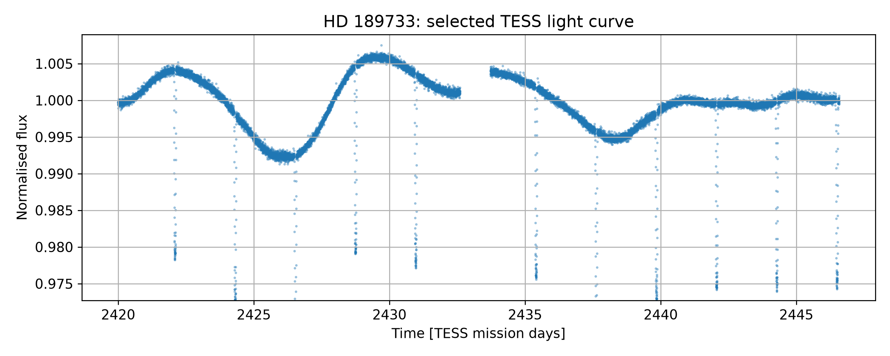
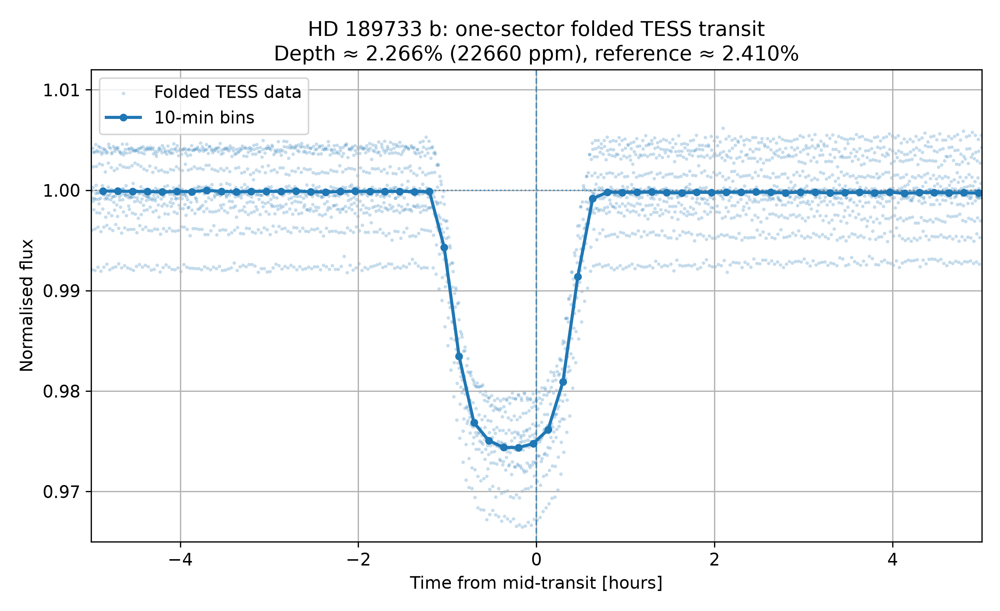

Analysis contract
SHA-256, LF-normalised text
0447e938dbb046b0b50f8ed595e6e86aa9a6dede427b43d0f73d039a1dfa0481Browse 7 versioned evidence files. Table previews simply display stored rows. Consult the project report for the source, processing steps, and inference assumptions.


0447e938dbb046b0b50f8ed595e6e86aa9a6dede427b43d0f73d039a1dfa0481| target | planet | product_index_used | mission | product_filename | data_uri | period_days |
|---|---|---|---|---|---|---|
| HD 189733 | HD 189733 b | 0 | TESS Sector 41 | tess2021204101404-s0041-0000000256364928-0212-s_lc.fits | mast:TESS/product/tess2021204101404-s0041-0000000256364928-0212-s_lc.fits | 2.21857567 |
7766eab4bda069173010ba7f225ae8349465f5848fd79d0c3193171272825876| event | depth_fraction | n_in | n_out |
|---|---|---|---|
| -5 | 0.022439368228318823 | 55 | 106 |
| -4 | 0.023314647208135808 | 54 | 106 |
| -3 | 0.023257322247531298 | 55 | 106 |
| -2 | 0.022677085979501577 | 55 | 106 |
a3fc57443dec6b5140826405b4dd7ec5114b75405306466d65345d941962811a| Quantity | Value |
|---|---|
| Host star | HD 189733 |
| Planet | HD 189733 b |
| Discovery method | Radial Velocity |
| Distance [pc] | 19.7638 |
65c974a13338265a34b093feaf7c966a1abe30a747df834f92087270516c96e0| Quantity | Value |
|---|---|
| Host star | HD 189733 |
| Planet | HD 189733 b |
| Discovery method | Radial Velocity |
| Distance [pc] | 19.7638 |
827a62c7c446bfc3096f1ffaaf80be2491267b19debde5c983f50d783689d3ef3e45569f19d27b18fdacfd6414a2e045b05dd48273b9956c637a11a5467e7cf43fb816f23ebaa96a77c58bf7c12a7f5748f810e603841817029d96a24f74f6b3SHA-256 values verify the stored files. They do not independently validate the scientific analysis. Rebuild this page with python scripts/evidence_catalog.py followed by python scripts/render_evidence_page.py.